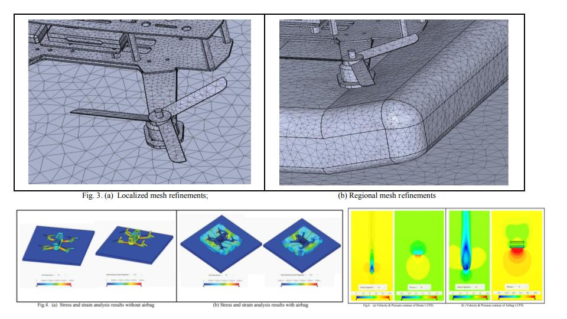
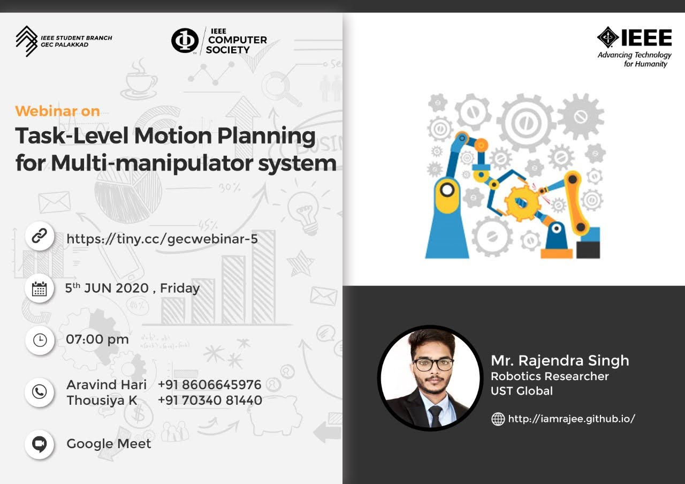

- Development of an Unmanned Aerial Vehicle for Remote Live Streaming on Web Dashboard | i-Mace 2022
International conference on innovation in Mechanical & Civil Engineering
28 August, 2022
Presented our research paper on design of dashboard for live monitoring using drones.
- Design and Development of an Auto-inflatable Airbag as the Failsafe System of Unmanned Aerial Vehicle
i-Mace 2022
27 August, 2022
Showcased our patentable idea for inflatable airbag for crash proof drones.

- Task-level motion planning for multi-malipulator system
IEEE Computer Society, GEC Palakkad
5 June, 2020
Conducted a webinar on multi-arm manipulation where I showcased my final year thesis work on Moveit, MTC and ROS.

- Visual SLAM on mobile manipulator using a robot operating system
Industry-Academia Conclave, IIT Palakkad
August, 2019
Presented a poster showcasing the implementation of 3D visual SLAM on an industrial manipulator robot.

- Low cost Prusa-i3 3D printer
Open House, Centre for Innovation(CFI), IIT Madras
October, 2017
Showcased low cost, self-made Prusa-i3 3D printer and its applications.